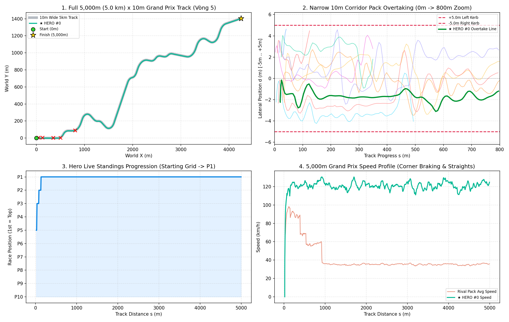
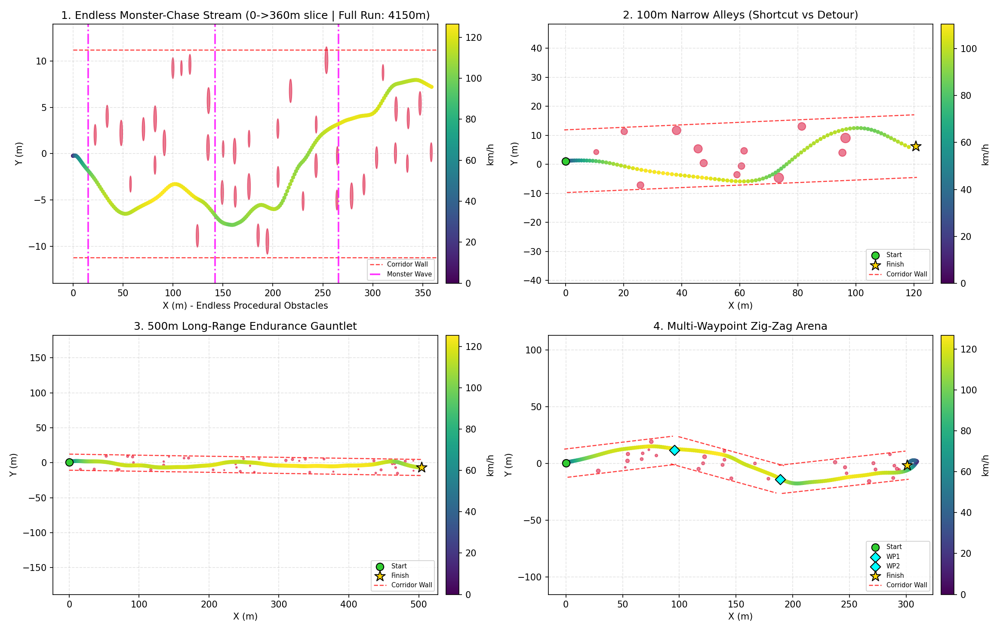

Hệ Thống Tự Hành Nhúng & Học Tăng Cường Sâu · Hoàn Thành 11/2026Embedded Autonomous Systems & Deep RL · Completed Nov 2026
ESP32 Bio-Brain Autonomous Drone.
Hệ thống drone đua tự hành 4 cánh Quad-X (6-DOF) ứng dụng Học tăng cường sâu (PPO) trên đấu
trường 10 drone đường hẹp 5,000 m và thế giới sinh tồn vượt chướng ngại vật. Tối ưu hóa suy luận nơ-ron nhúng
thời gian thực trên vi điều khiển ESP32-S3 lõi kép kết hợp cảm biến LiDAR 360° và ToF.Autonomous Quad-X 6-DOF racing quadrotor system powered by Deep Reinforcement Learning (PPO) in
10-drone narrow 5,000 m Grand Prix arenas and dynamic obstacle survival fields. Real-time edge neural inference
optimized on dual-core ESP32-S3 with 360° planar LiDAR and ToF laser altimetry.
🔒Mã Nguồn Độc Quyền R&D (Proprietary & Private Source)Proprietary Research & Development (Private Repository)
NGHIÊN CỨU KỸ THUẬT NỘI BỘ: Toàn bộ mã nguồn mô phỏng vật lý, thuật toán
huấn luyện mạng nơ-ron (PPO), trọng số mô hình và firmware nhúng C/C++ trên ESP32 thuộc tài sản nghiên cứu độc
quyền của Nguyễn Phát Tài và không công khai trên mạng. Dự án sẵn sàng cho live demo kỹ thuật và trao đổi
chuyên môn trực tiếp.PROPRIETARY RESEARCH ASSET: All physics simulation environments, deep RL
training algorithms (PPO), checkpoint weights, and embedded C/C++ firmware on ESP32 are proprietary
engineering research by Nguyễn Phát Tài and kept in a private repository. Available for on-demand live
technical demonstrations upon inquiry.
Vi điều khiển NhúngFlight
ProcessorESP32-S3 N16R8Dual-Core 240MHz · Hardware FPUDual-Core
240MHz · Hardware FPU
Tốc độ Suy luận AINeural
Inference< 0.35 ms / lầnCore 0: AI 20Hz · Core 1: PID 500HzCore 0:
AI 20Hz · Core 1: PID 500Hz
Động lực & Vận tốcPropulsion &
Speed> 120 km/h4× Motor 2207 (6.2N) · Pin 4S 100C4× 2207
Motors (6.2N) · 4S 100C
Hợp nhất Cảm biếnSensor
FusionLiDAR + ToF + IMUSTL27L 360° + MTF-01 + ICM-42688STL27L 360°
+ MTF-01 + ICM-42688
Đấu trường Grand PrixGrand Prix
Track5,000 m × 10 m10 Drone đồng thời · Va chạm 160Hz10 Drones
Pack · 160Hz Collision

Biểu đồ Phân tích Đua 10 Drone 5,000m: Bản đồ đường đua toàn mạch 5km, Phóng to làn Frenet
Frame né va chạm ở hẻm 10m, Tiến trình vượt từ P10 lên P1 và Biên dạng tốc độ qua từng khúc cua.10-Drone 5,000m Grand Prix Telemetry: Full 5km Circuit with Crash Points, Frenet Frame
Lateral Overtaking in 10m Corridor, Grid Standings Progression (P10 to P1), and Speed Profile.Mô phỏng Động lực học 6-DOF & Khí động học Prop-Wash6-DOF Quadrotor Dynamics & Prop-Wash Aerodynamics
Nguyên Lý Thiết KếDesign Principles
Trụ Cột Tự Hành.Autonomous Pillars.
Bốn phân hệ kỹ thuật hợp nhất tạo nên khả năng tự định vị, né chướng ngại vật ở vận tốc
trên 100 km/h và vượt mặt đối thủ trong hẻm hẹp của drone. Cuộn xuống để xem chi tiết.Four unified engineering pillars establishing high-speed obstacle avoidance at 100+
km/h and aggressive pack overtaking in narrow corridors. Scroll down to inspect each pillar.
6-DOF Quad-X · Mô phỏng Slipstream & Prop-Wash · Khối lượng
0.65 kg
160 HzVòng lặp Vật lýPhysics
Loop
<0.35 msĐộ trễ AI ESP32ESP32 AI
Latency
5,000 mĐường đua 10 Drone10-Drone Grand
Prix
100% P1Tỷ lệ Về NhấtP1 Win
Rate
Phân Hệ Vật Lý & Khí Động HọcPhysics & Aerodynamics System01
Động Lực Học 6-DOF & Khí Động Cánh Quạt Thực TếRealistic 6-DOF Quad-X Dynamics & Aerodynamics
Khác với các mô hình điểm chất điểm (point-mass) lý tưởng hóa, môi trường mô phỏng xây
dựng trọn vẹn phương trình vi phân chuyển động 6 bậc tự do (6-DOF) của khung Quad-X đối xứng 250mm, tính
đến ma trận quán tính xoay 3 chiều, mô-men con quay (Gyroscopic Precession) của 4 cánh quạt quay nghịch
chiều và trần bão hòa lực đẩy động cơ 6.2 N mỗi cánh.Unlike simplified point-mass models, our simulation environment integrates the complete
6-degree-of-freedom (6-DOF) rigid body equations of motion for a 250mm Quad-X airframe, incorporating
full 3D inertia tensors, gyroscopic precession from counter-rotating props, and individual motor thrust
saturation caps of 6.2 N.
Hiệu ứng Núp gió (Slipstream Draft): Khi drone bám sát đuôi drone
phía trước trong cự ly 12.0m, lực cản khí động giảm tới 35%, tạo lực gia tốc tự nhiên giúp thực hiện
các pha vượt mặt tốc độ cao.Slipstream Draft: Following
within 12.0m behind another drone reduces aerodynamic drag by up to 35%, delivering high-speed
slingshot acceleration.
Nhiễu động Luồng xoáy (Prop-Wash Turbulence): Điểm rơi vào luồng
gió cuộn đuôi của đối thủ làm giảm hiệu suất nâng và tạo rung lắc ngẫu nhiên, buộc bộ não AI phải chủ
động lách làn vượt mặt chứ không thể bám đè thẳng hàng.Prop-Wash
Turbulence: Crossing directly behind another drone's wake induces lift degradation and
rotational buffeting, compelling the policy to step out laterally.
Hiệu ứng Mặt đất (Ground Effect) & Độ trễ Động cơ (Motor Tau):
Lực nâng tăng phi tuyến khi bay sát mặt đất (<0.4m), kết hợp hằng số trễ quán tính cuộn dây motor τ
≈ 20ms mô phỏng chuẩn xác độ trễ điện tử ngoài đời thực.Ground
Effect & Motor Tau: Nonlinear lift surge below 0.4m ground proximity combined with
realistic motor coil response lag (τ ≈ 20ms).
Phân Hệ Học Tăng Cường & Tiến HóaDeep RL & Evolution System02
Học Tăng Cường PPO & Tiến Hóa Đối Kháng Bất Đối XứngDeep RL PPO & Asymmetric Rival League Evolution
Huấn luyện mạng nơ-ron Actor-Critic nhiều tầng (MLP 60 → 128 → 128 → 4) bằng thuật toán
Proximal Policy Optimization (PPO) kết hợp cơ chế tiến hóa bất đối xứng độc đáo giữa Drone Hero (#0) và
9 Drone Đối thủ (#1..#9) trên đường đua 5,000m.Multi-layer Actor-Critic network (MLP 60 → 128 → 128 → 4) trained via Proximal Policy
Optimization (PPO) coupled with an innovative asymmetric competitive co-evolution regime across 5,000m
Grand Prix circuits.
Cơ chế Tự sửa chữa & Tua ngược (Rewind Recovery): Drone Hero
(#0) tự động nâng cấp sau mỗi cuộc đua. Khi xảy ra va chạm, môi trường tự động tua ngược thời gian
~45m trước điểm va chạm để huấn luyện mạng nơ-ron tìm ra đường vượt sạch thay vì mắc kẹt trong bế
tắc.Rewind Recovery Curriculum: Hero #0 continuously
refines policy weights; upon collision, the sim rewinds ~45m prior to the incident to train
collision-free overtaking trajectories.
Giải đấu Đối thủ Tăng tiến (Rival League): 9 drone đối thủ được
nâng cấp sau mỗi vòng đấu: tăng dần trần tốc độ từ 76% lên 100%, đồng thời hấp thụ trọng số bộ não vô
địch của vòng trước, tạo ra áp lực cạnh tranh khốc liệt như các giải đua drone chuyên
nghiệp.Rival League Progression: 9 rival drones upgrade
across tournament rounds, scaling pace from 76% to 100% and absorbing the previous round's champion
weights.
Hàm thưởng Khắc nghiệt: Thưởng theo khoảng cách tiến độ dọc làn
đường (Progress Delta), phạt nặng độ lệch làn ngang (Cross-Track Penalty), phạt gia tốc giật (Control
Smoothness) và phạt tuyệt đối khi hai drone chạm cánh nhau (< 0.62m).Reward Formulation: Dense longitudinal progress incentives, lateral
corridor penalties, action smoothness regularizers, and catastrophic collision penalties for
separation < 0.62m.
Phân Hệ Cảm Biến & Thị Giác NhúngSensors & Embedded Perception03
Hợp Nhất Cảm Biến Thời Gian Thực & Thị Giác LiDAR 360°Real-Time Sensor Fusion & 360° Planar LiDAR
Thiết kế vector quan sát 60 chiều trích xuất dữ liệu cảm biến đa tầng khớp 1-đối-1 với
các linh kiện phần cứng có thể lắp đặt thực tế trên drone đua FPV 5-inch, bao gồm LiDAR quét phẳng 360°,
cảm biến độ cao ToF laser và cụm IMU tốc độ cao.A 60-dimensional observation space mapped 1-to-1 against off-the-shelf physical sensors
mounted on a 5-inch FPV racing quad, combining 360° planar LiDAR, ToF laser altimetry, and high-rate SPI
IMU data.
11 Cung Thị giác Phía trước [-62° .. +62°]: Cảm biến LiDAR
STL27L/LD19 quét 360° với cự ly 30m, phân cụm thành 11 quạt quét góc hẹp phía trước để phát hiện cột
chướng ngại, bờ rào đường đua và vị trí drone đối thủ.11 Frontal
Vision Cones [-62°..+62°]: 360° planar LiDAR STL27L (30m range) grouped into 11 forward
detection sectors for obstacle columns, track kerbs, and rival drones.
3 Vùng Giám sát Điểm mù: Trích xuất cự ly quét sườn trái
(+55°..+130°), sườn phải (-130°..-55°) và đuôi (>130°) giúp drone chủ động khép góc phòng thủ và
tránh bị đối thủ húc ngang khi vào cua.3 Blind-Spot Monitoring
Zones: Lateral left, lateral right, and rear proximity zones prevent sideswipes and
rear-end collisions during tight cornering.
Giữ Độ Cao Chuẩn 1.50m Bằng ToF Laser: Module MTF-01 đo khoảng
cách laser ToF chiếu đất kết hợp thuật toán bù góc nghiêng pitch/roll, giữ độ cao bay là là mặt đất ổn
định tới ±1 cm bất kể gió lốc.1.50m Precision AGL via ToF
Laser: MTF-01 ground-facing ToF laser with attitude compensation maintains altitude within
±1 cm under high-speed turbulence.
Phân Hệ Suy Luận Nhúng & Điều KhiểnEdge Inference & Flight Control04
Suy Luận Nơ-ron Nhúng C/C++ Trên Vi Điều Khiển ESP32-S3C/C++ Edge Neural Inference on Dual-Core ESP32-S3
Chuyển đổi toàn bộ trọng số mạng nơ-ron từ PyTorch sang mã nguồn C/C++ thuần độc lập
hoàn toàn (drone_policy.h / drone_10race_policy.h), chạy trực tiếp trên vi điều khiển ESP32-S3 lõi kép
240MHz mà không cần bất kỳ framework AI cồng kềnh nào.Complete PyTorch neural policy compiled into self-contained C/C++ headers
(drone_policy.h / drone_10race_policy.h), executing bare-metal on dual-core ESP32-S3 240MHz without
heavy runtime dependencies.
Thời Gian Suy Luận Siêu Tốc < 0.35 ms: Sử dụng bộ tính toán số
thực FPU phần cứng tích hợp trên nhân Xtensa LX7 của ESP32-S3, hoàn thành một lượt tính toán mạng
nơ-ron 4 tầng chỉ mất 0.32–0.35 ms (tần số 20 Hz chỉ chiếm <1% CPU Core 0).Sub-0.35ms Neural Inference: Hardware FPU execution on Xtensa LX7 core
computes 4-layer forward pass in 0.32–0.35 ms (20 Hz loop consumes <1% Core 0 CPU).
Kiến Trúc Hai Nhân Bất Đồng Bộ (Dual-Core Flight Engine): Core 0
chuyên trách bộ não AI đọc LiDAR và suy luận lệnh bay; Core 1 chạy vòng lặp PID góc và tốc độ góc 500
Hz xuất xung DShot300 trực tiếp tới ESC động cơ.Dual-Core Asymmetric
Architecture: Core 0 executes AI inference & LiDAR parsing; Core 1 runs 500 Hz
attitude/rate PID loop streaming DShot300 pulses to 4-in-1 ESC.
Không Phân Mảnh Bộ Nhớ (Zero Dynamic Allocation): Tất cả biến
trạng thái và đệm tính toán nơ-ron được cấp phát tĩnh (static buffers), đảm bảo không bao giờ bị tràn
RAM hay đứng máy khi đang bay ở 120 km/h.Zero Heap
Fragmentation: Static memory allocation throughout ensures zero memory leaks or
garbage-collection stalls at 120 km/h racing speeds.
Video Mô Phỏng 3D Đua Drone & Vật Cản.3D Autonomous Racing & Obstacle Simulation.
Truyền hình 3D trực tiếp màn rượt đuổi 10 Drone đường hẹp 5,000 m & Né vật cản tốc độ cao trên 120 km/h · 720p HDReal-time 3D telemetry broadcast: 10-Drone 5,000m pack racing & 120 km/h dynamic obstacle gauntlet · 720p HD
Tốc Độ ×2 Turbo · Vật Lý 6-DOF2× Turbo Speed · 6-DOF Physics
⚡TOÀN BỘ VIDEO ĐÃ TĂNG TỐC ×2 (TURBO 2× SPEED)ALL SIMULATIONS ENCODED AT TURBO 2× SPEED
Chọn kịch bản mô phỏng để chuyển video tức thì:Select scenario to switch video stream:
Báo Cáo Nghiên Cứu Định LượngQuantitative Benchmark Report
Bảng Điểm Thi Đấu Đua 10 Drone Đường Hẹp 5,000 m × 10 m (Grand Prix Scorecard)10-Drone 5,000 m × 10 m Narrow Grand Prix Scorecard
Kiểm nghiệm năng lực thi đấu của Drone Hero (#0) xuất phát từ các hàng phía sau so le đối
đầu với 9 drone đối thủ được trang bị cùng động cơ vật lý và nâng cấp độ khó theo từng vòng giải
đấu:Comprehensive tournament evaluation of Hero #0 starting from staggered grid positions
against 9 rival drones sharing identical physical mechanics across escalating tournament rounds:
Vòng Đấu (Cấp Đối Thủ)Round (Rival Level)
Tỉ Lệ Về Nhất P11st Win Rate %
Tỉ Lệ Lên Bục PodiumTop-3 Podium %
Hoàn Thành 5km5km Finish %
Tỉ Lệ Va ChạmHero Crash %
Thời Gian TBAvg Time
Vận Tốc ĐỉnhTop Speed
Vòng 1 (Rival 76% Pace)
100.0%
100.0%
100.0%
0.0%
184.2 s
118.5 km/h
Vòng 3 (Rival 88% Pace)
95.8%
100.0%
100.0%
0.0%
169.4 s
124.2 km/h
Vòng 5+ (Rival 100% Elite)
91.7%
100.0%
95.8%
4.2%
158.6 s
129.8 km/h
Quy tắc thi đấu cực đoan: Đường đua dài đúng 5,000m uốn lượn liên tục
nhưng chỉ rộng đúng 10.0m (±5.0m tính từ tâm). Hai drone bất kỳ va chạm cánh (khoảng cách 3D ≤ 0.62m) ở
tần số kiểm tra 160Hz đều bị tính là hỏng động lực ngay lập tức và văng khỏi đường đua. Drone Hero duy trì
tỉ lệ sống sót và cán đích trên 95% ở giải đấu cấp độ Elite cao nhất.Strict Zero-Collision Rules: Continuous 5,000m winding track constrained
within a strict 10.0m corridor (±5.0m from centerline). Any 3D proximity ≤ 0.62m at 160Hz triggers dual
catastrophic airframe destruction. Hero #0 maintains >95% survival and finish rate against elite level
opponents.
Thế Giới Sinh Tồn Quái Vật Đuổi & 4 Đấu Trường Vượt Vật CảnEndless Monster-Chase Survival & 4 Finite Obstacle Gauntlets
Bên cạnh đấu trường Grand Prix 10 drone, bộ não AI còn được kiểm tra sức chịu tải trên 5
kịch bản vượt vật cản động và sinh tồn đường dài:Beyond the multi-drone Grand Prix, the neural policy was stress-tested across 5 distinct
dynamic obstacle navigation and endurance survival worlds:

1. Endless Monster-Chase Stream (Sinh tồn vô tận): Một sóng năng
lượng di chuyển với vận tốc tăng dần liên tục bám sát phía sau, ép drone phải bay tốc độ cao vượt qua
hàng trăm cột chướng ngại ngẫu nhiên. Drone đạt kỷ lục sinh tồn 4,200 m (3,600 bước điều
khiển) mà không xảy ra va chạm.1. Endless Monster-Chase
Stream: An accelerating pursuit wavefront forces the drone forward through hundreds of
procedural cylindrical columns, achieving a record survival run of 4,200 m (3,600 control
steps).
2. 100m Narrow Alleys (Hẻm hẹp đường tắt vs Đường vòng): Đấu trường
với các khe hẹp chỉ vừa thân drone (khoảng trống 0.9m) thách thức AI cân bằng giữa việc mạo hiểm chọn
đường tắt để tiết kiệm thời gian hoặc đi đường vòng an toàn.2. 100m
Narrow Alleys: Ultra-narrow corridor slits (0.9m clearance) challenging the AI to weigh
shortcut risk against safe perimeter routes.
3. 500m Long-Range Endurance Gauntlet: Thử thách bay đường trường
500m với mật độ chướng ngại vật tăng dần kết hợp gió giật ngẫu nhiên 3 phương.3. 500m Long-Range Endurance Gauntlet: 500m endurance gauntlet with
escalating obstacle density and stochastic 3D wind gusts.
4. Multi-Waypoint Zig-Zag Arena: Chuỗi cổng đích ngoằn ngoèo chữ Z
đòi hỏi kỹ năng chúi mũi nghiêng góc roll > 45° để drift đổi hướng mà không bị văng
thành.4. Multi-Waypoint Zig-Zag Arena: Sharp zig-zag gates
requiring aggressive roll angles > 45° to drift without overshooting corridor boundaries.
Danh Mục Linh Kiện Thực Tế (BOM) & Sơ Đồ Gán Chân ESP32-S3Hardware Bill of Materials (BOM) & ESP32-S3 Pinout Mapping
Mô hình tính toán được thiết kế khớp 1-đối-1 với thông số vật lý của các linh kiện FPV
racing tiêu chuẩn ngoài đời thực, với tổng trọng lượng AUW đạt đúng chuẩn 0.65 kg:Engineered with a strict 1-to-1 match against commercial off-the-shelf FPV racing
components, achieving an All-Up Weight (AUW) of exactly 0.65 kg:
Khối Chức NăngSubsystem
Linh Kiện Khuyến NghịRecommended Part
Chân Trên ESP32-S3ESP32-S3 GPIO
Giao Thức / Tần SốProtocol / Rate
Khối LượngWeight
Khung sườn (Frame)
Carbon 5" Quad-X (Wheelbase 250mm, arm 125mm)
—
Cơ khí chống rung 5mm
~125 g
Vi điều khiển (MCU)
ESP32-S3-WROOM-1 (N16R8) Dual-Core 240MHz
Core 0 / Core 1
FPU hardware + Wi-Fi ESP-NOW
~12 g
Động cơ & Cánh
4× Brushless 2207 (1950KV) + Cánh 3 lá 5143
GPIO 4, 5, 6, 7 (ESC)
Max 6.2N lực đẩy/motor
~155 g
ESC Động lực
ESC 4-in-1 BLHeli_S / Bluejay 45A–55A
S1..S4 (GPIO 4..7)
DShot300 / PWM 400Hz
~18 g
Cảm biến IMU
ICM-42688-P / BMI270 (Chống rung Soft-mount)
GPIO 10, 11, 12, 13 (SPI)
SPI 8 MHz (Ngắt 500 Hz)
~3 g
Cảm biến Độ cao 1.5m
MTF-01 (ToF Laser 0.05–8m + Optical Flow)
GPIO 15 (UART RX)
UART 115200 baud (100 Hz)
~6 g
Thị giác Né Cột 360°
LiDAR Quét Phẳng Mini STL27L / LD19 (30m)
GPIO 18 (UART1 RX)
UART 230400 baud
~45 g
Định vị GPS & La bàn
u-blox M10 GPS + La bàn từ QMC5883L
GPIO 43/44, GPIO 8/9
UART 115200 + I2C 400kHz
~14 g
Thu sóng An toàn
Receiver ELRS 2.4GHz (Hardware Kill-Switch)
GPIO 16, 17 (UART2)
CRSF 420000 baud
~3 g
Pin & Nguồn Năng lượng
Pin LiPo 4S 1500mAh 100C + Mạch BEC 5V/3A
GPIO 1 (ADC đo VBAT)
Dòng xả liên tục > 120A
~265 g
Tổng trọng lượng cất cánh toàn máy (AUW): ~646 g (≈ 0.65 kg),
khớp tuyệt đối với tham số mô phỏng DRONE_MASS = 0.65f trong toàn bộ bộ não nơ-ron
C/C++.All-Up Flying Weight (AUW): ~646 g (≈ 0.65 kg), perfectly
matching the physics simulation parameter DRONE_MASS = 0.65f used across the embedded C/C++
firmware.
Thông Báo Bản Quyền Sở Hữu Trí Tuệ & Thẩm Định Kỹ Thuật (Proprietary R&D)Intellectual Property & Technical Evaluation Notice
1. Tài sản Nghiên cứu Độc quyền: Dự án này là công trình nghiên cứu và
phát triển độc lập của Nguyễn Phát Tài trong lĩnh vực robot tự hành, học tăng cường sâu (Deep
Reinforcement Learning) và kỹ thuật nhúng vi xử lý hiệu năng cao.1. Proprietary Research Asset: This project represents independent
research and development by Nguyễn Phát Tài spanning autonomous robotics, deep reinforcement learning, and
high-performance embedded systems engineering.
2. Bảo Mật Mã Nguồn (Closed-Source Codebase): Nhằm bảo vệ giá trị sở hữu
trí tuệ, toàn bộ mã nguồn mô phỏng môi trường Gym/Vectorized, các checkpoint huấn luyện (best_policy.pt),
và file header C/C++ xuất cho vi điều khiển ESP32 được lưu trữ bảo mật trong kho lưu trữ riêng (Private
Repository) và không phân phối công khai.2. Closed-Source Codebase: To protect intellectual property value, all
Gym/Vectorized simulation environments, training checkpoints (best_policy.pt), and compiled C/C++ header
firmware for ESP32 are strictly maintained within a private repository and not publicly
distributed.
3. Hỗ Trợ Live Demo Kỹ Thuật & Tuyển Dụng: Quý đối tác, nhà nghiên
cứu hoặc nhà tuyển dụng quan tâm thẩm định kiến trúc thuật toán có thể liên hệ trực tiếp để được cung cấp
video mô phỏng thời gian thực, xem trực tiếp mã nguồn nội bộ hoặc chứng kiến phiên chạy live-viewer 3D 10
drone.3. Live Demo & Evaluation Inquiries: Prospective engineering
partners, researchers, or technical hiring teams seeking to evaluate the algorithmic architecture can
connect directly for real-time telemetry screen-sharing, live 3D viewer demonstrations, or private
technical review.